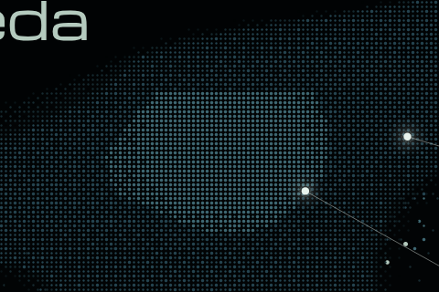
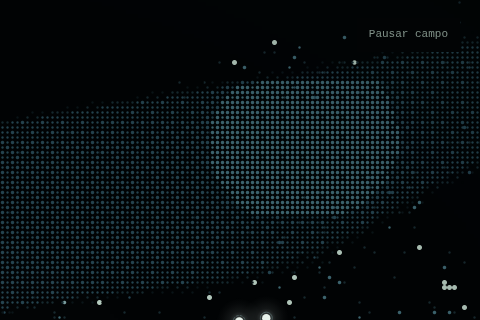
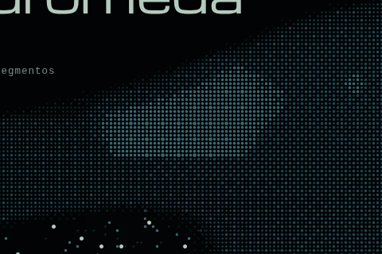
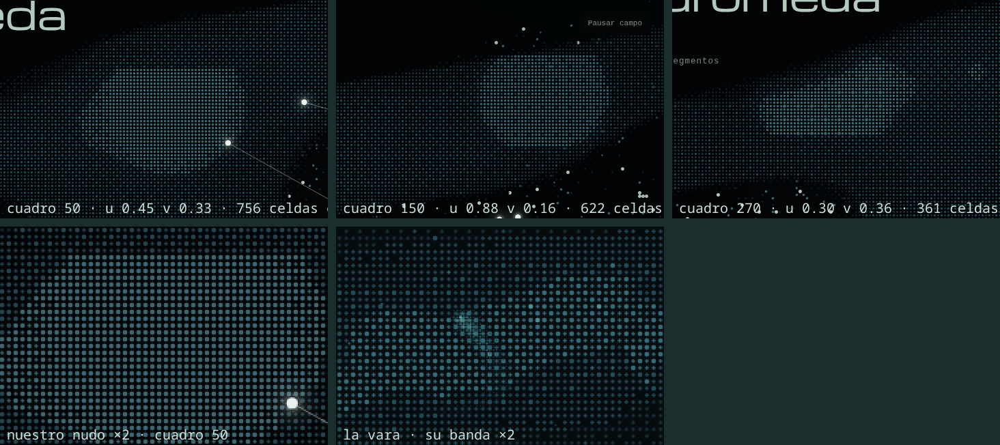
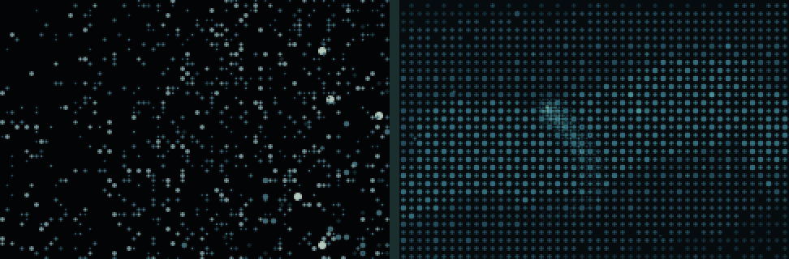

Validar · 2026-11-05
Todo lo que hace falta para decidir, en un lugar. Primero la escena viva (interactúa), después las comparaciones con la vara al mismo tamaño.
Hacé click en un nodo: la cámara se acerca, el plano del nodo se afirma y el lejano se desenfoca. El puntero no mueve nada — sólo ilumina el nodo bajo el cursor, como en v1.
Abrir la escena → Congelada en el cuadro 150 (con el nudo) Congelada en el cuadro 270La luz recorre el eje de la banda y deja estela. Estos son tres momentos distintos: el nudo cambia de lugar. Antes de esta iteración el nudo no existía (el p95 era igual al máximo).



Recorte ampliado 2×. Arriba la vara, abajo lo nuestro en tres instantes. El contraste de tono ya empata (1,307 contra 1,303); lo que se ve distinto es el grano: la vara está moteada y la nuestra es una retícula pareja.

Izquierda: lo nuestro. Derecha: la banda de la vara. Mismo tamaño, misma regla de medición. Acá está la decisión: nuestra banda es más ancha y su cuerpo más brillante.

La decisión: ¿subo la luminancia del cielo para poder oscurecer y angostar la banda, o acepto el cuerpo actual?
Lo primero acerca el grano moteado de v1 y cambia el fondo de la pieza. Lo segundo deja el nudo y el contraste ya empatados, pero la banda se lee como retícula pareja.